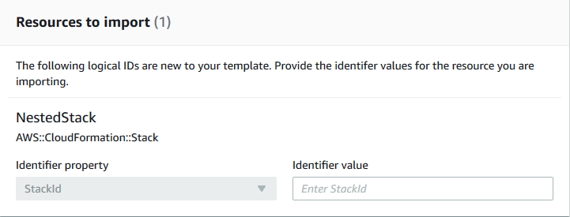

Terjemahan disediakan oleh mesin penerjemah. Jika konten terjemahan yang diberikan bertentangan dengan versi bahasa Inggris aslinya, utamakan versi bahasa Inggris.
Membuat nest tumpukan yang ada
Gunakan fitur resource import untuk membuat nest tumpukan yang ada dalam tumpukan lain yang ada. Tumpukan bersarang adalah komponen umum yang Anda nyatakan dan referensikan dari dalam templat lain. Dengan begitu, Anda dapat menghindari menyalin dan menempelkan konfigurasi yang sama ke dalam templat dan menyederhanakan pembaruan tumpukan. Jika Anda memiliki templat untuk komponen umum, Anda dapat menggunakan sumber daya AWS::CloudFormation::Stack untuk mereferensikan templat ini dari dalam template lain. Untuk informasi selengkapnya tentang tumpukan bersarang, lihat Bekerja dengan tumpukan nest.
AWS CloudFormation hanya mendukung nesting satu tingkat menggunakan resource import. Ini berarti Anda tidak dapat mengimpor tumpukan ke tumpukan anak atau mengimpor tumpukan yang memiliki anak.
Validasi impor tumpukan bersarang
Selama operasi impor tumpukan bersarang, AWS CloudFormation melakukan validasi berikut.
-
Definisi
AWS::CloudFormation::Stackbersarang dalam templat tumpukan induk sesuai dengan templat tumpukan bersarang yang sebenarnya. -
Tanda untuk definisi
AWS::CloudFormation::Stackbersarang dalam templat tumpukan induk sesuai dengan tanda untuk sumber daya tumpukan bersarang yang sebenarnya.
Membuat nest tumpukan yang ada menggunakan AWS Management Console
-
Tambahkan
AWS::CloudFormation::Stacksumber daya ke template tumpukan induk dengan aRetainDeletionPolicy. Dalam contoh templat induk berikut,NestedStackadalah target impor.JSON
{ "AWSTemplateFormatVersion" : "2010-09-09", "Resources" : { "ServiceTable":{ "Type":"AWS::DynamoDB::Table", "Properties":{ "TableName":"Service", "AttributeDefinitions":[ { "AttributeName":"key", "AttributeType":"S" } ], "KeySchema":[ { "AttributeName":"key", "KeyType":"HASH" } ], "ProvisionedThroughput":{ "ReadCapacityUnits":5, "WriteCapacityUnits":1 } } }, "NestedStack" : { "Type" : "AWS::CloudFormation::Stack", "DeletionPolicy": "Retain", "Properties" : { "TemplateURL" : "https://s3.amazonaws.com/cloudformation-templates-us-east-2/EC2ChooseAMI.template", "Parameters" : { "InstanceType" : "t1.micro", "KeyName" : "mykey" } } } } }YAKL
AWSTemplateFormatVersion: 2010-09-09 Resources: ServiceTable: Type: 'AWS::DynamoDB::Table' Properties: TableName: Service AttributeDefinitions: - AttributeName: key AttributeType: S KeySchema: - AttributeName: key KeyType: HASH ProvisionedThroughput: ReadCapacityUnits: 5 WriteCapacityUnits: 1 NestedStack: Type: 'AWS::CloudFormation::Stack' DeletionPolicy: Retain Properties: TemplateURL: >- https://s3.amazonaws.com/cloudformation-templates-us-east-2/EC2ChooseAMI.template Parameters: InstanceType: t1.micro KeyName: mykey -
Buka konsol AWS CloudFormation.
-
Di halaman Tumpukan, dengan tumpukan induk yang dipilih, pilih Tindakan tumpukan, lalu pilih Impor sumber daya ke tumpukan.

-
Baca halaman Gambaran umum Impor untuk daftar hal yang harus Anda sediakan selama operasi ini. Kemudian, pilih Selanjutnya.
-
Di halaman Tentukan templat, sediakan templat Anda yang telah diperbarui menggunakan salah satu metode berikut, lalu pilih Selanjutnya.
-
Pilih URL Amazon S3, lalu tentukan URL untuk templat Anda di kotak teks.
-
Pilih Unggah file templat, lalu telusuri templat Anda.
-
-
Di halaman Identifikasi sumber daya, identifikasi setiap sumber daya
AWS::CloudFormation::Stack.-
Di bawah Properti pengidentifikasi, pilih jenis pengidentifikasi sumber daya. Misalnya, sumber daya
AWS::CloudFormation::Stackdapat diidentifikasi menggunakan propertiStackId. -
Di bawah Nilai pengidentifikasi, ketik nilai properti yang sebenarnya. Misalnya,
arn:aws:cloudformation:us-west-2:12345678910:stack/mystack/5b918d10-cd98-11ea-90d5-0a9cd3354c10 -
Pilih Selanjutnya.
-
-
Di halaman Tentukan detail tumpukan, ubah parameter apa pun, lalu pilih Selanjutnya. Ini secara otomatis membuat set perubahan.
penting
Operasi impor gagal jika Anda mengubah parameter yang sudah ada yang memulai operasi membuat, memperbarui, atau menghapus.
-
Di halaman Tinjau
stack-name, konfirmasikan bahwa sumber daya yang benar sedang diimpor, lalu pilih Impor sumber daya. Ini secara otomatis menjalankan set perubahan yang dibuat pada langkah terakhir. Semua tanda stack-level diterapkan pada sumber daya yang diimpor saat ini. -
Panel Peristiwa di halaman Detail tumpukan menampilkan tumpukan induk Anda.

catatan
Tidak perlu menjalankan deteksi penyimpangan pada tumpukan induk setelah operasi impor ini karena
AWS::CloudFormation::Stacksumber daya sudah dikelola olehAWS CloudFormation.
Membuat nest tumpukan yang ada menggunakan AWS CLI
-
Tambahkan
AWS::CloudFormation::Stacksumber daya ke template tumpukan induk dengan aRetainDeletionPolicy. Dalam contoh templat induk berikut,NestedStackadalah target impor.JSON
{ "AWSTemplateFormatVersion" : "2010-09-09", "Resources" : { "ServiceTable":{ "Type":"AWS::DynamoDB::Table", "Properties":{ "TableName":"Service", "AttributeDefinitions":[ { "AttributeName":"key", "AttributeType":"S" } ], "KeySchema":[ { "AttributeName":"key", "KeyType":"HASH" } ], "ProvisionedThroughput":{ "ReadCapacityUnits":5, "WriteCapacityUnits":1 } } }, "NestedStack" : { "Type" : "AWS::CloudFormation::Stack", "DeletionPolicy": "Retain", "Properties" : { "TemplateURL" : "https://s3.amazonaws.com/cloudformation-templates-us-east-2/EC2ChooseAMI.template", "Parameters" : { "InstanceType" : "t1.micro", "KeyName" : "mykey" } } } } }YAKL
AWSTemplateFormatVersion: 2010-09-09 Resources: ServiceTable: Type: 'AWS::DynamoDB::Table' Properties: TableName: Service AttributeDefinitions: - AttributeName: key AttributeType: S KeySchema: - AttributeName: key KeyType: HASH ProvisionedThroughput: ReadCapacityUnits: 5 WriteCapacityUnits: 1 NestedStack: Type: 'AWS::CloudFormation::Stack' DeletionPolicy: Retain Properties: TemplateURL: >- https://s3.amazonaws.com/cloudformation-templates-us-east-2/EC2ChooseAMI.template Parameters: InstanceType: t1.micro KeyName: mykey -
Buat set perubahan jenis
IMPORTdengan parameter berikut.--resources-to-importtidak mendukung YAKL inline.>aws cloudformation create-change-set --stack-nameTargetParentStack--change-set-nameImportChangeSet--change-set-typeIMPORT--resources-to-import "[{\"ResourceType\":\AWS::CloudFormation::Stack\",\"LogicalResourceId\":\"MyStack\",\"ResourceIdentifier\":{\"StackId\":\"arn:aws:cloudformation:us-east-2:123456789012:stack/mystack-mynestedstack-sggfrhxhum7w/f449b250-b969-11e0-a185-5081d0136786\"}}] --template-bodyfile://templateToImport.jsonAWS CLI juga mendukung file teks sebagai input untuk parameter
resources-to-import, seperti yang ditunjukkan dalam contoh berikut.--resources-to-import:file://resourcesToImport.txtDalam panduan ini,
file://resourcesToImport.txtmengandung hal berikut ini.JSON
[ { "ResourceType":"AWS::CloudFormation::Stack", "LogicalResourceId":"MyStack", "ResourceIdentifier": { "StackId":"arn:aws:cloudformation:us-east-2:123456789012:stack/mystack-mynestedstack-sggfrhxhum7w/f449b250-b969-11e0-a185-5081d0136786" } } ]YAKL
ResourceType: 'AWS::CloudFormation::Stack' LogicalResourceId: MyStack ResourceIdentifier: StackId: >- arn:aws:cloudformation:us-east-2:123456789012:stack/mystack-mynestedstack-sggfrhxhum7w/f449b250-b969-11e0-a185-5081d0136786 -
Tinjau set perubahan untuk memastikan tumpukan yang benar sedang diimpor.
>aws cloudformation describe-change-set --change-set-nameImportChangeSet -
Jalankan set perubahan untuk mengimpor tumpukan ke tumpukan induk sumber. Semua tanda stack-level diterapkan pada sumber daya yang diimpor saat ini. Setelah berhasil menyelesaikan operasi impor
(IMPORT_COMPLETE), tumpukan berhasil dibuat nest-nya.>aws cloudformation execute-change-set --change-set-nameImportChangeSetcatatan
Tidak perlu menjalankan deteksi penyimpangan pada tumpukan induk setelah operasi impor ini karena sumber daya
AWS::CloudFormation::Stacktelah dikelola oleh AWS CloudFormation.